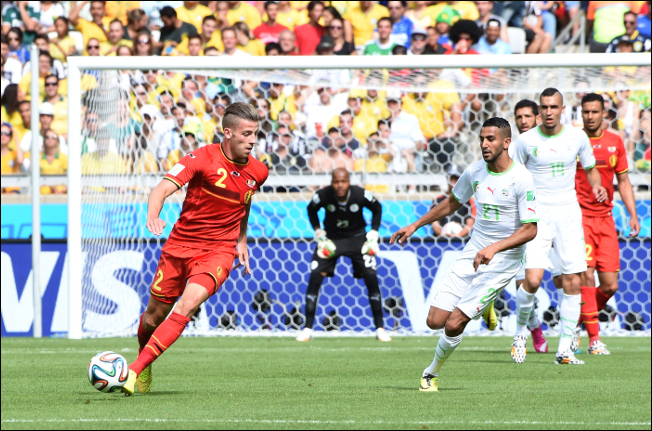
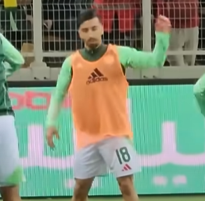
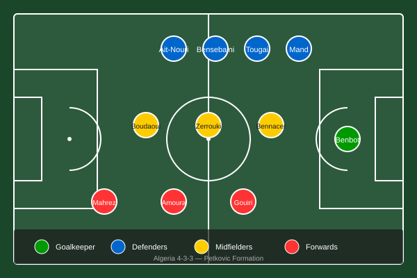

bnwraptor
bnwraptor
The Desert Foxes are back. After missing the last two World Cups, Algeria punched their ticket to the 2026 tournament with a dominant qualifying campaign that should have every neutral paying attention. This is not the Algeria of the Slimani and Feghouli era, and it might actually be better.
The Basics
Algeria topped CAF qualification Group G with 22 points from 10 matches: seven wins, one draw, two losses, 24 goals scored, and just seven conceded. They sealed qualification on October 9, 2025, with a 3-0 home win over Somalia, courtesy of a Mohamed Amoura brace and a Riyad Mahrez goal. That result told you everything about how this team operates: swift transitions, clinical finishing, and a captain who still has the vision to pick a pass nobody else sees.
Their FIFA ranking coming into 2026 sits around 28th in the world, which undersells what this team can do on its day. They have been drawn into Group D for the tournament proper, where they will face Ecuador, Costa Rica, and Uzbekistan. That is a manageable group for a team with ambitions beyond the group stage, but Algeria has had manageable groups before and still stumbled. The difference this time is the coach, the tactical system, and the emerging stars around whom the whole project is built.
They are one of several African teams at this World Cup, including Egypt, Morocco, Nigeria, Senegal, South Africa, and Tunisia. Algeria's participation marks their fifth World Cup appearance overall, with previous showings in 1982, 1986, 2010, and 2014.
The Storyline
For a nation of 45 million people where football is not just a sport but a civic religion, the absence from 2018 and 2022 was felt like a wound. The generation that grew up watching Rabah Madjer silhouette against Brazil in 1982, that wept when Sofiane Feghouli scored that penalty against Germany in 2014, had to sit home and watch others play in Russia and Qatar. That generation is now in its late twenties and early thirties, and the current squad blends them with a crop of exciting youngsters who grew up watching those players on YouTube highlights, not in stadiums.
The appointment of Vladimir Petkovic in February 2024 was quietly one of the most interesting coaching hires in African football. He is Bosnian-Swiss, he coached Switzerland at the 2018 and 2022 World Cups and at Euro 2020 and 2024, and he beat France in 2021. He is not an African football rookie either; he understands the cultural dynamics, the media pressure, and the expectation that comes with managing a national team where losing to a smaller neighbour is treated as a national crisis. He signed a contract extension after qualification was secured, which tells you he believes in this project.
The storyline heading into 2026 is simple: can Algeria finally translate their talent into a World Cup knockout stage run? They have the players, they have the coach, and they have the belief. What they have never had in recent memory is the finishing luck.
The Coach
Vladimir Petkovic is 62 years old and carries himself with the quiet confidence of a man who has coached at the highest level and survived. His career path tells you a lot about his philosophy. He cut his teeth in Swiss football, managing clubs like Lausanne Sport and Young Boys, before taking the Switzerland national team job in 2014. He was sacked after Euro 2024, but the Algerian FA moved fast and got him before anyone else could.
His tactical fingerprint is adaptable organization. He is not a zealot for any single formation; he is a pragmatist who wants his team to control games through midfield structure and hit teams on the transition. His Switzerland side were known for being difficult to break down and lethal on the counter, and he is installing similar principles with Algeria. The base formation is a 4-3-3, but he shifts to a 4-2-3-1 against stronger opponents or a 3-5-2 when he wants extra width and aerial presence.
What makes Petkovic interesting for Algeria specifically is that he has experience managing diverse squads with high expectations, and he knows how to get elite club players to buy into a collective project. Riyad Mahrez and Ismael Bennacer are not players who need convincing to show up for their country, but the same cannot be said for every player in the squad. Petkovic's man-management skills will be as important as his tactics when the tournament starts.
Key Players

Mahrez in action at the 2014 World Cup. Algeria face Belgium in Rio de Janeiro. Photo: Wikimedia Commons
Riyad Mahrez (Right Winger, 35, Al-Ahli)
The captain. 88 caps, 28 goals. He is 35 and playing his club football in Saudi Arabia, which means some will write him off. That is a mistake. Mahrez's game was never built on pace; it was built on vision, close control, and the ability to produce a moment of magic from nothing. He is still Algeria's primary chance creator, and his set-piece delivery remains one of the most dangerous weapons in African football. He scored and assisted in the final qualifier and his relationship with the younger players in the squad gives the team a psychological anchor. When Algeria needs someone to hold the ball in the final minutes, it will be Mahrez.
Mohamed Amoura (Forward, 25, Wolfsburg)

Amoura in training with Algeria. The Wolfsburg striker scored 10 goals in qualification. Photo: Wikimedia Commons
This is the player European scouts are losing sleep over. Amoura scored 10 goals in qualification, more than anyone else in the CAF qualifying campaign, and his pace terrorized defenders across Africa. He plays for Wolfsburg in the Bundesliga and his game is built on intelligent movement, sharp finishing, and the ability to run in behind centre-backs who think they have the offside line figured out. At 25, he is entering his peak and this World Cup is his coming-out party. If Algeria go far, Amoura will be the reason.
Ramy Bensebaini (Left Back, 30, Borussia Dortmund)
One of the most consistent defenders in African football over the past five years. Bensebaini plays his club football at Dortmund where he contributes regularly to both ends of the pitch. He scores around five goals per season from left-back, which is an exceptional return, and his heading ability from set-pieces makes him a legitimate goal threat every time Algeria gets a corner or free kick. He is also solid defensively, good in one-on-one situations, and comfortable playing a high line. He is the kind of player coaches build defensive systems around.
Ismael Bennacer (Defensive Midfielder, 28, AC Milan)
This is the player Algeria cannot afford to lose to injury. Bennacer is the midfield pivot around which everything flows. He broke through at Arsenal, established himself at Milan, and has consistently been one of the most composed defensive midfielders in Serie A when healthy. The problem is that fitness has been an issue throughout his career. He missed significant time in 2023 and 2024, and his availability for the World Cup will determine how far Algeria can go. When Bennacer is playing, Algeria can control games against anyone. When he is missing, the midfield loses its structure and the team becomes reliant on individual moments.
Rayan Ait-Nouri (Left Back, 24, Manchester City/Wolves)
The youngest of the key five, Ait-Nouri is a rapid left-back who has developed into one of the most exciting full-backs in European football. He is primarily associated with Wolves but spent time at Manchester City in his youth and the positional discipline from that upbringing shows. He is comfortable driving forward with the ball, good in tight spaces, and improving defensively every season. At 24, he represents the future of this team beyond 2026, but he is also vital to their present chances. His ability to overlap and deliver quality crosses gives Algeria a different dimension going forward than they had in previous tournaments.
How They Play

Algeria's expected 4-3-3 starting XI under Vladimir Petkovic. Illustration: bnwraptor
Petkovic's Algeria plays a high-intensity pressing game when they have the ball, but they are not naive about it. The press is organized, triggers are clear, and the team is quick to drop into a mid or low block if the press is beaten. The shape is fluid: 4-3-3 in attack, 4-2-3-1 in transition, 3-5-2 or 4-4-2 when defending deep.
The midfield three usually features Bennacer as the deepest-lying midfielder, with Ramzi Zerrouki or Hicham Boudaoui as the interiors. Boudaoui, who plays at Nice, is the more attack-minded of the two, carrying the ball forward and linking play between the lines. Zerrouki, formerly of Feyenoord and now at Twente, offers more defensive solidity and range of passing. The choice between them defines how Petkovic wants to approach each match.
In attack, Mahrez operates as the primary creator from the right side, often cutting inside onto his left foot to deliver crosses or shots. Amoura leads the line as the central striker, making runs in behind and linking play. The left side is more fluid: it could be Amine Gouiri dropping deep to receive, or it could be Adil Boulbina stretching the play wide. The variety is intentional. Petkovic wants opponents to prepare for different versions of Algeria, not one predictable pattern.
Set pieces are a significant weapon. With Bensebaini's heading ability, Mandi's aerial presence, and Mahrez's delivery, roughly 25 percent of Algeria's goals in qualification came from dead-ball situations. That is a high percentage and it reflects deliberate work on the training ground.
The average possession stat in qualification was around 48 percent, which tells you this is not a team that dominates the ball against organized defences. Algeria is at their best when the game is open, when they have space to run into, and when they can hit teams on the transition. Against a low block, they can struggle to create clear-cut chances, which is why the choice of opponents in the knockout rounds will matter enormously.
World Cup History
Algeria's World Cup record is a mixture of historic highs and painful disappointments.
Their first appearance was Spain 1982, and it produced one of the most famous results in African World Cup history. They beat West Germany 2-1 in the group stage, a result that was dubbed the Miracle of Constantine. It made Algeria the first African team ever to beat a European side at a World Cup. The following match saw West Germany play Austria in a result that eliminated Algeria through a scandalous arrangement between the two teams. FIFA subsequently introduced the rule that all final group games must be played simultaneously, partly as a result. Algeria finished 13th in the group stage and went home, but they left a mark on the tournament that still resonates.
In 1986 in Mexico, they drew 1-1 with Brazil and exited in the group stage without advancing.
The next appearance came in South Africa 2010, where they finished 28th in the group stage, drawing 0-0 with England and failing to win a match.
Brazil 2014 was the high point. Algeria reached the Round of 16 for the first time in their history. They beat South Korea 4-2 in a memorable match, drew 1-1 with Russia, and then lost 2-1 to Germany after extra time in the Round of 16. Sofiane Feghouli scored from the penalty spot in that game, which remains one of the most celebrated Algerian football moments. Islam Slimani and Feghouli were the stars of that team.
They were absent from Russia 2018 and Qatar 2022, which means this 2026 squad is largely uncapped at World Cup level. Only a handful of players from 2014 are still in the squad, and none are regular starters anymore.
Strengths
The transition game is Algeria's biggest weapon. When they win the ball back quickly, they have the pace and technique to move it forward within seconds. Mahrez, Amoura, Ait-Nouri, and Gouiri can all hurt teams in this scenario, and opponents who push players forward without cover will be exposed.
The set-piece efficiency is genuine. Bensebaini is a genuine goal threat from corners and free kicks, Mandi brings experience and height at the back, and Mahrez's delivery from the right flank is consistently excellent. This is not accidental; Petkovic has clearly worked on this extensively.
Tactical flexibility gives Algeria options. They are not a one-formation team and they can adapt during a match. If they need to chase a game, they can shift to a 3-5-2 and push both full-backs forward. If they need to protect a lead, they can drop into a 4-4-2 mid-block and rely on the counter.
The experience of Mahrez, Mandi, and Bennacer in high-pressure moments cannot be overstated. These are players who have played in European finals, who have dealt with the scrutiny of 80,000-strong Algerian stadiums, and who understand what it means to carry a nation's hopes. Mental toughness will not be an issue.
The qualifying campaign record of 70 percent wins against decent opposition should also give this team genuine belief. They did not stumble into qualification; they dominated their group.
Concerns
The lack of a clinical number nine is the most obvious concern. Since Islam Slimani retired from international football, no centre-forward in the Algeria squad has consistently filled the role of a 20-goal-a-season striker. Gouiri is an excellent all-round forward but he is not a penalty-box predator in the Slimani mould. Amoura is close but still developing his hold-up play. If a game opens up and Algeria needs someone to finish a half-chance in the box, the answer is less clear than it should be for a team with ambitions beyond the group stage.
The age profile of the core players is worth monitoring. Mahrez is 35, Mandi is 34, and Mahrez in particular has slowed measurably even if his technique remains sharp. If Mahrez picks up an injury in the tournament or loses a step at the worst moment, the creative burden shifts to players who have never played a World Cup match.
Bennacer's fitness is a strategic concern, not just a medical one. Algeria's midfield structure without him is considerably weaker. The squad depth in his position is adequate but not exciting, and the transition from Bennacer to his backup midfielder mid-game could be a moment of vulnerability against high-quality opponents.
The possession vulnerability is real. Against teams like Germany, Brazil, or Argentina in the knockout rounds, giving up 52 percent consistently is a recipe for being worn down over 90 or 120 minutes. Algeria has the talent to beat any team on their day, but they do not have the structural security to dominate games against elite opposition for full matches.
The away-form issue flagged during qualification, particularly the losses to Botswana and Lesotho, suggests a psychological fragility in unfamiliar environments. North American stadiums will feel different from Algiers or Blida, and the team needs to prove they can replicate their home form on the road.
Realistic Expectation
Group D is winnable. Ecuador, Costa Rica, and Uzbekistan are all beatable on paper, and Algeria should be targeting top two in the group to reach the Round of 16 comfortably. Anything less than advancing from the group would be a failure for this squad and this coach.
The Round of 16 is a realistic goal. Whether they can go further depends heavily on the draw and on Bennacer's fitness. If they get a favourable draw and their key players are available, quarter-final contention is not unreasonable. If Bennacer is missing or Mahrez is double-marked out of the tournament, they could easily lose in the Round of 16 to a superior team.
The honest expectation for Algeria is: group stage victory, Round of 16 appearance, possible quarter-final if everything breaks right. That would represent their best World Cup performance since 2014 and a genuine statement for a team that was absent from the last two tournaments.
The benchmark is not the group stage anymore. Anything less than the Round of 16 will feel like a missed opportunity given the quality in this squad.
The X-Factor
Mohamed Amoura.
He is 25, playing in the Bundesliga, and arriving at his first World Cup with 10 qualification goals and a point to prove to everyone who has not been watching him closely. Amoura is the player who can take a tournament by the scruff of the neck and make everyone who dismissed him before suddenly very interested.
If Amoura plays the way he is capable of playing, Algeria have a genuine goal scorer at the World Cup for the first time since Slimani in 2014. His pace forces centre-backs to make decisions they do not want to make, and his finishing ability means those decisions being wrong result in the ball in the back of the net.
The X-factor is not just the ability, though. It is the timing of it. This is Algeria's first World Cup in 12 years. A young player like Amoura stepping onto that stage and announcing himself to the global audience with a goal or two in a high-profile match is exactly the kind of moment that defines a player's career and a country's tournament. Mahrez will draw the attention. Amoura is the one who can actually finish what the captain creates.
Watch Amoura in Group D. That is where this World Cup starts getting interesting for Algeria.